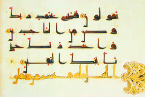
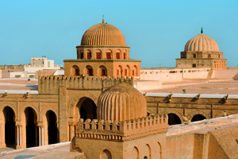

Lezione 6  islam
islam

-
240
120
-
330
280
-
330
600
-
360
880
-
290
140
-
310
100
-
180
175
-
380
695

SPAGNA
La scrittura cufica è un particolare tipo di calligrafia araba in cui i caratteri vengono fortemente stilizzati secondo configurazioni geometriche, fino a raggiungere effetti di grande eleganza grafica che si avvicinano a quelli di una composizione pittorica: ne vediamo un esempio in questo manoscritto del Corano, dipinto in Spagna tra il IX e il X secolo.
TUNISIA
La Grande Moschea di Kairouan è la più antica del mondo islamico: fu fondata nel 670 ma il suo aspetto attuale risale al IX secolo.DAMASCO
661: Il califfato diventa ereditario, con la dinastia Omayyade a Damasco. 750 Con una rivolta armata gli Abbasidi si impadroniscono del califfato (Damasco).FIUME INDO
700: I musulmani arrivano oltre le rive del fiume Indo e hanno contatti con l’Impero cinese.SPAGNA
711: I musulmani arrivano in Spagna e sconfiggono i visigoti.CORDOBA
Còrdoba diventa sede di un Emirato arabo, dal 929 è sede del califfato Omayyade.POITIERS
732: A Poitiers Carlo Martello ferma l’avanzata musulmana.BAGHDAD
762: Fondazione di Baghdad, sede del califatto abbaside.